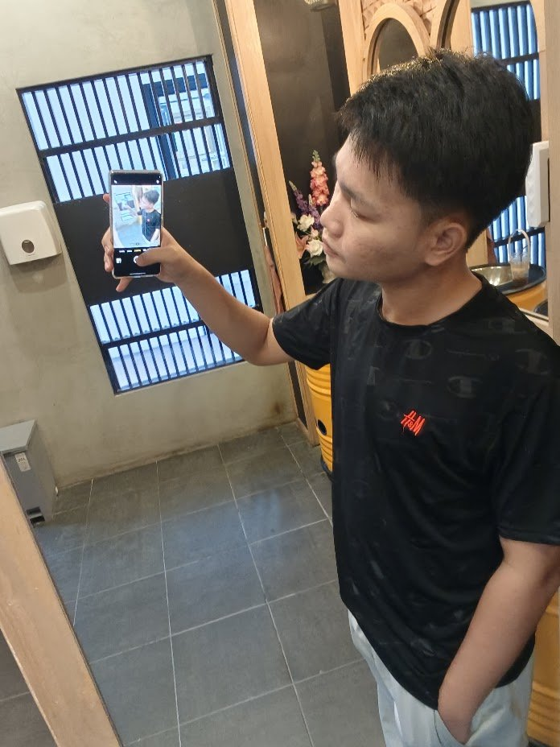

สวัสดีครับ ผม เต้ย
“โกเต้ยไม้หลา”
นายอธิญาณ บุญแก้ววรรณ ✓
อายุ 17 ปี กำลังศึกษาสายวิชาชีพด้าน เทคโนโลยีสารสนเทศ (Information Technology) ณ วิทยาลัยอาชีวศึกษานครศรีธรรมราช มีความหลงใหลในโลกไอที เทคโนโลยี และพร้อมก้าวสู่การเป็นมืออาชีพในยุคดิจิทัล

ข้อมูลสำคัญ & แผนกวิชา
เจาะลึกตัวตน ประวัติย่อ และสายการเรียนของโกเต้ย
ตัวตนและชื่อเรียก
เป็นคนกระตือรือร้น ชอบค้นคว้า ชอบเรียนรู้สิ่งใหม่ ๆ เข้ากับคนง่าย และมีความตั้งใจจริงในการฝึกฝนทักษะเพื่อเตรียมความพร้อมสู่สายอาชีพ
แผนกเทคโนโลยีสารสนเทศ
วิทยาลัยอาชีวศึกษานครศรีธรรมราช
ศึกษาและลงลึกในศาสตร์ของระบบสารสนเทศ การทำงานของคอมพิวเตอร์และระบบเครือข่าย รวมทั้งการประยุกต์ใช้เทคโนโลยีดิจิทัลเพื่อตอบโจทย์โลกยุคใหม่
“เทคโนโลยีพัฒนาตลอดเวลา สิ่งสำคัญคือเราต้องไม่หยุดเรียนรู้และลงมือทำอย่างเต็มที่”
นครศรีธรรมราช • ร่อนพิบูลย์
ภูมิลำเนาและพื้นที่เติบโตที่มีเอกลักษณ์ ผู้คนอบอุ่น และเป็นจุดเริ่มต้นของเส้นทางการศึกษา
เส้นทางการศึกษา
ประวัติสถานศึกษาและการเรียนรู้ตั้งแต่ระดับพื้นฐานจนถึงปัจจุบัน
วิทยาลัยอาชีวศึกษานครศรีธรรมราช
สถาบันการศึกษาสายวิชาชีพชั้นนำของจังหวัดนครศรีธรรมราช มุ่งเน้นการเสริมสร้างทักษะความเชี่ยวชาญเชิงปฏิบัติการ ในสายงานเทคโนโลยีสารสนเทศ (IT) สร้างสรรค์ผลงาน และเตรียมความพร้อมเพื่อการก้าวสู่อาชีพทางด้านเทคโนโลยีในอนาคต
โรงเรียนร่อนพิบูลย์เกียรติวสุนธราภิวัฒก์
สถาบันการศึกษาในอำเภอร่อนพิบูลย์ ที่สร้างรากฐานด้านวิชาการ วินัย และปลูกฝังคุณธรรม พร้อมเป็นจุดเริ่มต้นที่ค้นพบความชอบและความถนัดทางด้านคอมพิวเตอร์และเทคโนโลยี
ทักษะและความสนใจด้านไอที
ขอบเขตเนื้อหาที่กำลังศึกษาและมุ่งพัฒนาตนเองอย่างต่อเนื่อง
เว็บและเทคโนโลยีสารสนเทศ
ทำความเข้าใจโครงสร้างเว็บไซต์ HTML, CSS และการวางผังหน้าเว็บที่สวยงาม ทันสมัย ใช้งานง่าย
คอมพิวเตอร์และฮาร์ดแวร์
การดูแล ตรวจสอบความพร้อม การประกอบเครื่อง และการแก้ปัญหาเบื้องต้นของระบบคอมพิวเตอร์
ระบบเครือข่ายพื้นฐาน
เรียนรู้หลักการเชื่อมต่อระบบเน็ตเวิร์ก IP Address และการรับส่งข้อมูลในระบบสารสนเทศ
การปรับตัวและเรียนรู้สิ่งใหม่
พร้อมเปิดรับเครื่องมือใหม่ ๆ โปรแกรมใหม่ ๆ และแนวคิดการทำงานเป็นทีมที่มีประสิทธิภาพ
“โกเต้ยไม้หลา — ก้าวสู่อนาคตด้วยเทคโนโลยี”
พร้อมมุ่งมั่นศึกษา พัฒนาศักยภาพในสายงานสารสนเทศ และสร้างสรรค์ผลงานที่เป็นประโยชน์